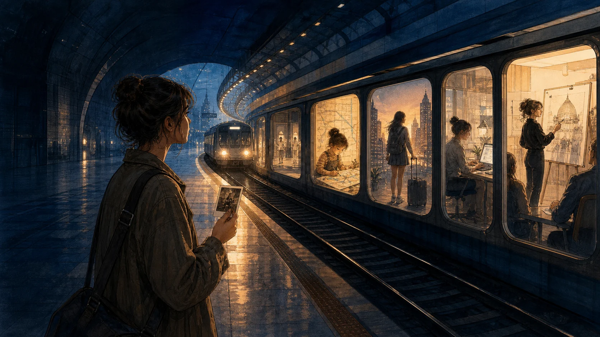
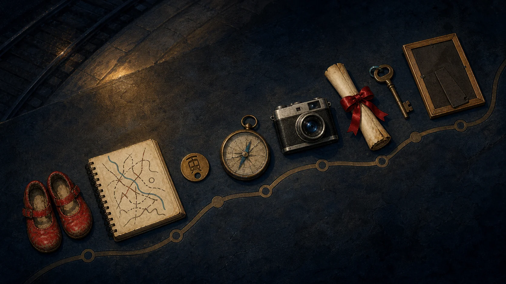
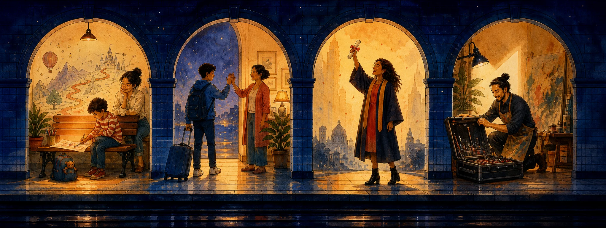
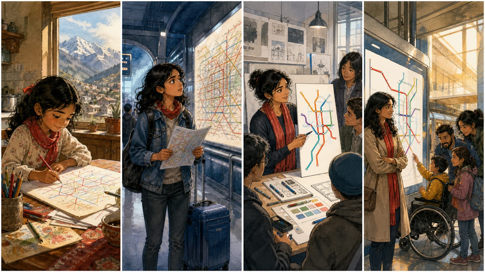
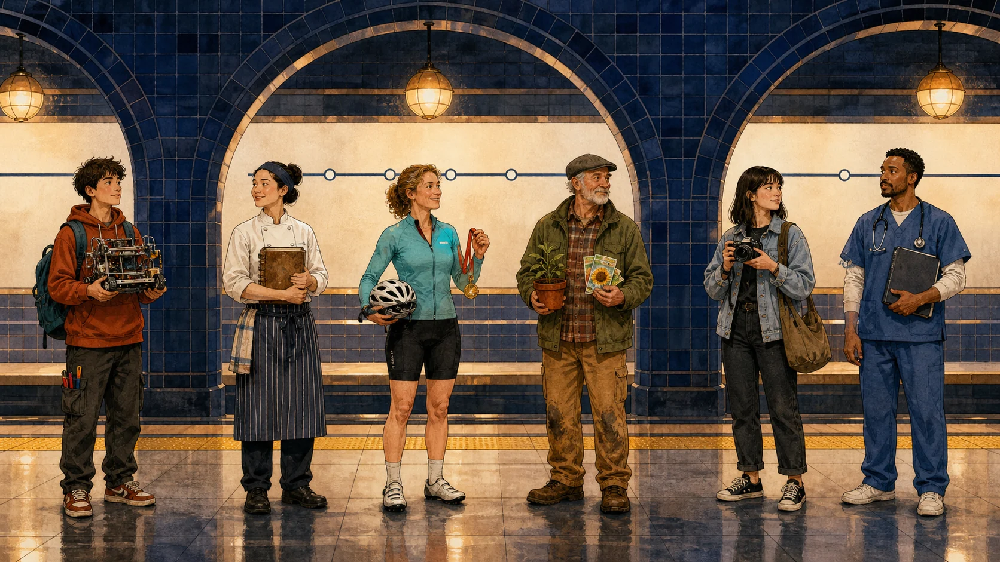
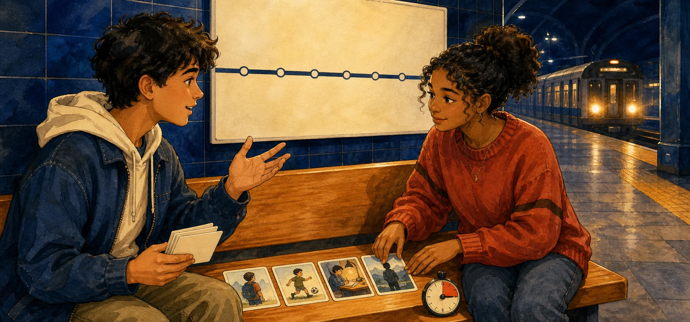

Vocabulary
Describe milestones, choices, and turning points.

A life has many stations. Learn how to show what had happened before another moment in the past.
Goal: improve a one-word description of a person. Tap each card to reveal behavior and emotion that prove the adjective.

Describe milestones, choices, and turning points.
Identify the earlier and later past events.
Build Past Perfect statements, negatives, and questions.
Interview someone and create a coherent life story.

“When Lina arrived in the huge city, she had never used an underground train.”
Past Perfect
Past Simple
Lina had drawn routes for years.
EARLIER PAST · platform 1She entered design school.
LATER PAST · platform 2When we reached the station, the train ___.
I ___ a ticket and entered the station.
Before Maya changed careers, she ___ engineering for four years.
She tested the sign, corrected it, and ___ the exhibition.
Tap, listen to the classroom model, and repeat as one rhythm group.
Jo couldn't enter because she ___ her pass.
Before the award, Amir ___ to such a large audience.
After the doors closed, the next train ___.
By the time I offered help, Lina ___ a new route.
She felt confident because she ___ the same course before.
He gained experience, met a mentor, and ___ careers.

Select three predictions. The picture gives clues, not every answer.
Lina grew up in a small mountain town. Long before she knew the words “graphic design,” she drew imaginary bus routes across old paper. By the age of twelve, she had filled six notebooks with colorful lines.
At sixteen, Lina won a place on a summer course in a huge city. She was excited, but she had never travelled alone or used an underground train before. On her first afternoon, she followed the wrong line and arrived two hours late. The confusing map embarrassed her, but it also gave her a question: could a route map feel simple to a new traveler?
After Lina had returned home, she began studying signs, colors, and public spaces. She later entered design school. Before she graduated, she had tested more than twenty map ideas with tourists, children, and people with limited vision. Several early designs failed because she had included too much information.
At twenty-six, Lina's first map appeared in a busy station. She watched a family choose the correct platform without asking for help. The journey had started with a mistake, but that mistake had changed her direction. She had not planned that career as a child; she had discovered it by getting lost.
1 · Gist: What changed Lina's direction?
2 · Detail: Underline five Past Perfect forms and connect each to its later past point.
“By twelve, she had filled six notebooks.”
“She had never travelled alone before.”
“She had tested twenty ideas before she graduated.”
“That mistake had changed her direction.”


Listener: draw the four stations you hear, then ask one question with Had…?
Complete twelve Past Simple / Past Perfect choices and draw time arrows.
Make eight milestone cards with one collocation and one V3 form.
Write 110–130 words about a fictional person's turning point. Use Past Perfect twice.
Prepare a 60-second version of your four-station story without reading.
Next: Speaking Club | Technology & AI